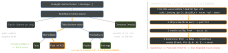

react-native · folio
In one line: Navigation is a tree of navigators holding one serialisable
state object; actions (navigate, goBack) bubble up to
the nearest navigator that can handle them, deep links are parsed down into that
state, and screens stay mounted under a push — so “appear” is focus, not mount.
Download PDF Print view LaTeX source


Navigators — what they are natively
- native-stack — via
react-native-screens: a real UINavigationController / Android Fragment. Native push, swipe-back, large titles. Default choice; custom transitions limited. - stack — JS:
Animated+ gesture-handler. Any transition you can draw; costs JS/UI work, never quite UIKit. - bottom-tabs — JS tab bar, screens lazy, then kept
mounted. drawer — reanimated + gesture-handler.
freezeOnBlurstops re-rendering hidden screens. - Nesting rules. Each navigator owns its own history.
navigate(name)is tried by the current navigator, then its parents — never into an unrendered child: usenavigate('Tabs',{screen, params}).goBackpops the nearest navigator with history.setOptionsaffects only the screen’s own navigator. Params do not flow to child screens. - Shape decides UX: tabs inside a stack screen → pushed detail hides the tab bar; a stack inside each tab → tab bar stays, per-tab history (the UIKit
UITabBarController-of-navs pattern). - Lifecycle ≠ component lifecycle. Push B over A: A is not unmounted; Back unmounts B. So
useEffect=viewDidLoad;useFocusEffect=viewWillAppear/Disappear;useIsFocusedre-renders; listenersfocus·blur·beforeRemove(unsaved-changes guard).
Example — typed params, linking, focus
type HomeParams = { Feed: undefined; Post: { id: string } };
type TabParams = { HomeTab: NavigatorScreenParams<HomeParams> };
type RootParams = { Tabs: NavigatorScreenParams<TabParams>;
SignIn: undefined; Compose: { draft?: string } };
type PostProps = NativeStackScreenProps<HomeParams, 'Post'>;
declare global { namespace ReactNavigation { // typed hooks
interface RootParamList extends RootParams {} } }
const linking: LinkingOptions<RootParams> = {
prefixes: ['myapp://', 'https://ex.com'],
config: { screens: { Compose: 'compose', Tabs: { screens: {
HomeTab: { initialRouteName: 'Feed', // Feed under Post
screens: { Feed: 'feed', Post: 'post/:id' } } } } } } };
useFocusEffect(useCallback(() => { // runs on every focus
const sub = feed.subscribe(); return () => sub.remove(); }, []));Deep links — the native half
- iOS: custom scheme in
CFBundleURLTypes; universal links need the Associated Domains entitlementapplinks:ex.com+/.well-known/apple-app-site-association. Bare RN: AppDelegate forwardsopen urlandcontinue userActivitytoRCTLinkingManager(Expo wires it). - Android:
intent-filterVIEW + BROWSABLE,autoVerify="true"+/.well-known/assetlinks.json. - Notification taps: override
getInitialURL/subscribe— a tap is just a URL. Test:xcrun simctl openurl booted <url>·adb shell am start -a android.intent.action.VIEW -d <url>.
Auth flows · persistence
- Auth = conditional screens, not redirects:
{user ? <Screen Tabs/> : <Screen SignIn/>}. State flips → the tree swaps, SignIn leaves history (no Back to login), nonavigaterace. - Persistence:
initialState+onStateChange→ AsyncStorage, restored before first render. Serialisable params only (no callbacks); skip when opened by a link.
Expo Router vs React Navigation
| React Navigation | Expo Router (built on it) | |
|---|---|---|
| routes | components in code | files: [id].tsx (group) _layout |
| links | config by hand | automatic, one URL per file |
| types | ParamList by hand | generated typed hrefs |
| pick | dynamic trees, non-Expo | Expo, web, link-heavy apps |
Traps
- Refetch in
useEffectskips Back:useFocusEffect(useCallback(…)). navigate('Home')after login — use conditional screens.- Stack in stack/tab = two headers:
headerShown:false. - Nested link without
initialRouteName→ no Back. push= new instance (Profile→Profile);navigatereuses.